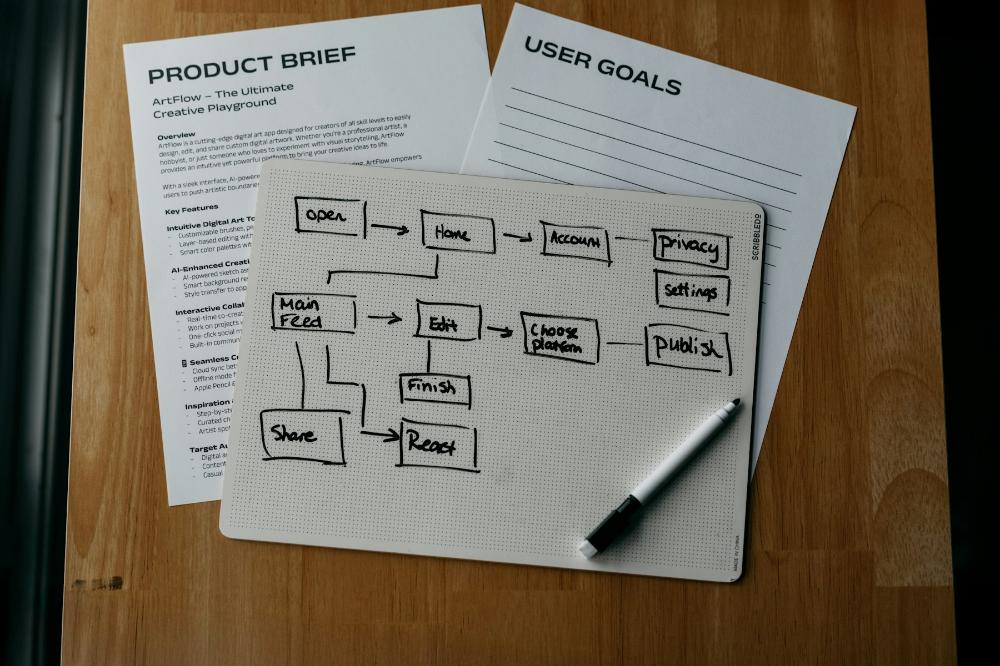
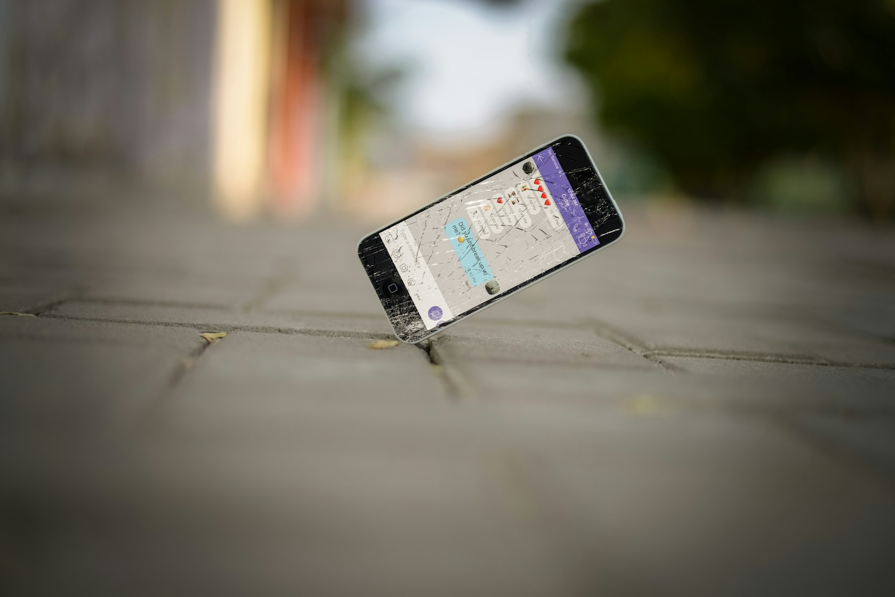
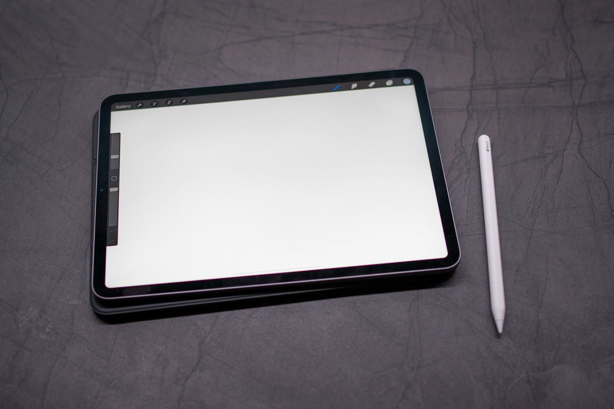

TL;DR
Freelancers can significantly boost productivity through apps designed for task management, time tracking, and communication. Implementing systems like invoicing tools and mindfulness applications can streamline processes and improve overall efficiency.

Task Management Apps
Task management apps like Trello and Asana help freelancers organize their work efficiently. With these tools, you can create boards for projects, assign due dates, and set reminders. Begin by creating a board for each client or project. Within each board, add tasks as cards. Move them through different stages, labeling them as 'to do', 'in progress', or 'completed'. This visual organization helps in tracking progress and meeting deadlines. Integrating these apps with your calendar enhances scheduling. Make it a habit to review your boards daily. This keeps tasks fresh in mind and reduces overwhelm. You can customize your boards with checklists and priority levels, making it easy to focus on what matters.

Time Tracking Solutions
Freelancers need to track their time accurately to bill clients correctly and manage work hours. Applications like Harvest and Toggl allow you to log hours, categorize tasks, and generate reports. Start by setting up your projects and clients within the app, then begin tracking each task as you work. Using time tracking insights, identify areas for productivity improvements. For instance, if you notice you're spending too much time on administrative tasks, consider delegating or automating them. Regular review of tracked time also helps in forecasting project timelines and setting realistic deadlines.
Communication Platforms
Effective communication is key to freelancing success. Platforms like Slack and Zoom facilitate seamless interactions with clients and collaborators. Create channels for different projects in Slack to keep discussions organized. This helps you quickly reference important messages and avoids clutter. Schedule regular check-ins through Zoom to maintain strong relationships with clients. Prior to meetings, prepare an agenda to ensure all topics are covered efficiently. Post-meeting, summarize key points in your communication channel for clarity and follow-up.

Note-Taking Applications
Apps such as Notion and Evernote are invaluable for freelancers to capture ideas, meeting notes, and project outlines. These applications allow you to create notebooks for different clients or projects for straightforward organization. Regularly update your notes to reflect ongoing tasks and insights. Utilize tagging features for easy retrieval of information when needed. Incorporating checklists in your notes can further streamline your workflow. Making it a routine to review notes weekly ensures you're aligned with client expectations and able to adapt as projects evolve.
File Management Systems
Maintaining order in digital files is crucial. Cloud-based storage solutions like Google Drive and Dropbox allow freelancers to store, share, and collaborate on documents effortlessly. Start by structuring folders logically, perhaps by client or project type, to make files easily accessible. Implement version control for important documents, ensuring you can revert to previous versions if needed. Encourage clients to use these platforms for efficient file sharing. Regularly audit your files, deleting what is no longer relevant, to keep your digital workspace clutter-free.
Invoicing Tools
Invoicing is an essential part of freelancing, and using tools like FreshBooks and QuickBooks can simplify this process. Set up templates for invoices that you can customize as per the client’s requirements. Once work is completed, quickly generate an invoice reflecting hours worked and project details. Ensure timely follow-ups on unpaid invoices using automated reminders. Monthly tracking of your invoicing will provide insights into your earnings and help in budgeting. Making invoicing a streamlined task reduces stress during payment periods.
Focus and Mindfulness Apps
Maintaining focus amidst distractions is key for freelancers. Applications like Forest and Headspace can help you stay productive and centered. Set specific time blocks using Forest to focus on tasks without interruptions, rewarding yourself with a visual growth of trees as you complete work. Headspace offers mindfulness exercises that can reduce stress and enhance concentration. Take 5-10 minutes daily for meditation to reset your mind. Integrating mindfulness into your routine boosts your ability to handle complex tasks efficiently, supporting overall productivity.
FAQ
What are the best productivity apps for freelancers?
Some of the best include Trello for task management, Harvest for time tracking, Slack for communication, and Google Drive for file management.
How can I manage my time better as a freelancer?
Utilize time tracking apps to monitor work hours, set deadlines, and create a structured daily routine to allocate time effectively.
Which invoicing tool should I choose?
FreshBooks and QuickBooks are popular choices for freelancers, offering easy-to-use templates and automation for tracking payments.
Are mindfulness apps helpful for productivity?
Yes, mindfulness apps promote focus, reduce stress, and enhance overall work efficiency, making them beneficial for freelancers.
How do communication tools improve freelancing?
Communication platforms streamline interactions with clients, ensuring clear expectations and fostering professional relationships.
Photo credits
- Photo 1: Kelly Sikkema on Unsplash (https://unsplash.com/@kellysikkema) (https://unsplash.com/photos/workflow-diagram-product-brief-and-user-goals-are-shown-wdnpaTNwOEQ)
- Photo 2: Ali Abdul Rahman on Unsplash (https://unsplash.com/@_actually_) (https://unsplash.com/photos/selective-focus-photo-of-iphone-balance-on-brick-pavement-TS5Pi8jqJZY)
- Photo 3: Debby Hudson on Unsplash (https://unsplash.com/@hudsoncrafted) (https://unsplash.com/photos/black-and-silver-rotary-phone-tqdyMlJk7Wk)
- Photo 4: Ernest Ojeh on Unsplash (https://unsplash.com/@namzo) (https://unsplash.com/photos/black-tablet-computer-on-gray-textile-doTjbfxrmRw)
- Photo 5: Wesley Tingey on Unsplash (https://unsplash.com/@wesleyphotography) (https://unsplash.com/photos/stack-of-books-on-table-snNHKZ-mGfE)
- Photo 6: Samsung Memory on Unsplash (https://unsplash.com/@samsungmemory) (https://unsplash.com/photos/a-man-sitting-in-front-of-a-laptop-computer-RtOINPihAeQ)
- Photo 7: md faisal on Unsplash (https://unsplash.com/@_faisal_reza_) (https://unsplash.com/photos/man-sitting-on-gorund-uKMI67T_7Iw)